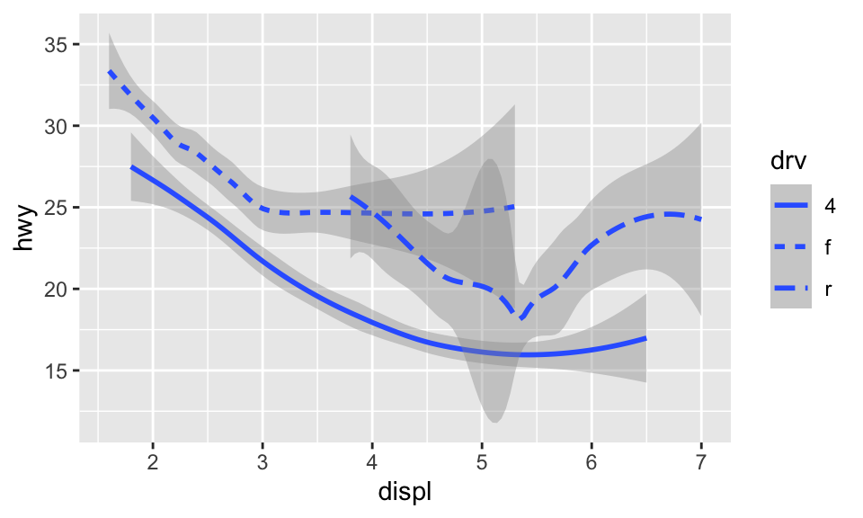
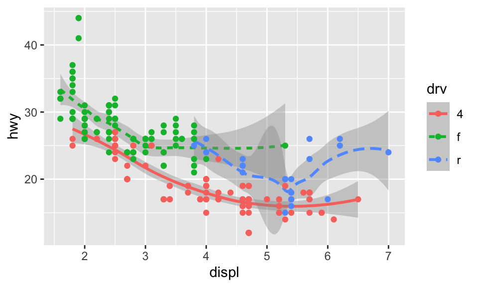

5.5 幾何物件
Geom 是一種圖用來表示資料的幾何物件。例如，bar charts 使用 bar geoms，line charts 使用 line geoms，boxplots 使用 boxplot geoms 等。
要改變圖的 geom，即改變 ggplot() 所加的 geom function，例如我們把剛剛的 geom_point() 改成 geom_smooth 的話將會得到：
# 對於 geom_smooth() 中的 method 與 formula 用法可見其文檔
ggplot(data = mpg) +
geom_smooth(mapping = aes(x = displ, y = hwy), method = 'loess', formula = 'y ~ x')
我們也可以設置 aesthetic。雖然不能設置線的 shape，但可以設定線的 linetype。例如，我們可以根據變數 drv 來繪製三條不同的線：
ggplot(data = mpg) +
geom_smooth(mapping = aes(x = displ, y = hwy, linetype = drv),
method = "loess", formula = "y ~ x")
或者也可以疊加兩種 geom：
ggplot(data = mpg) +
geom_smooth(mapping = aes(x = displ, y = hwy, color = drv, linetype = drv),
method = "loess", formula = "y ~ x") +
geom_point(mapping = aes(x = displ, y = hwy, color = drv))
如果把引數放在 ggplot() 中，則會被視為 global mapping，將會套用到圖中的所有 geom；而放在 geom() 中則會被視為 local mapping，只會套用到該 geom。所以上述的程式碼也可以簡化為：
ggplot(data = mpg, mapping = aes(x = displ, y = hwy, color = drv)) +
geom_smooth(aes(linetype = drv), method = "loess", formula = "y ~ x") +
geom_point()